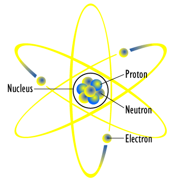
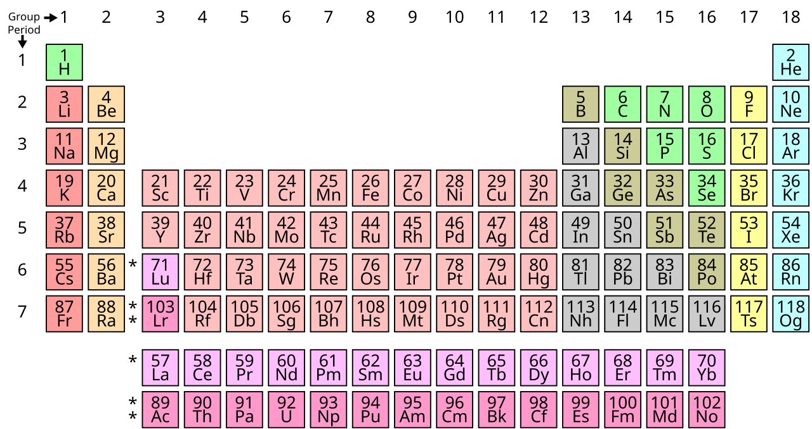
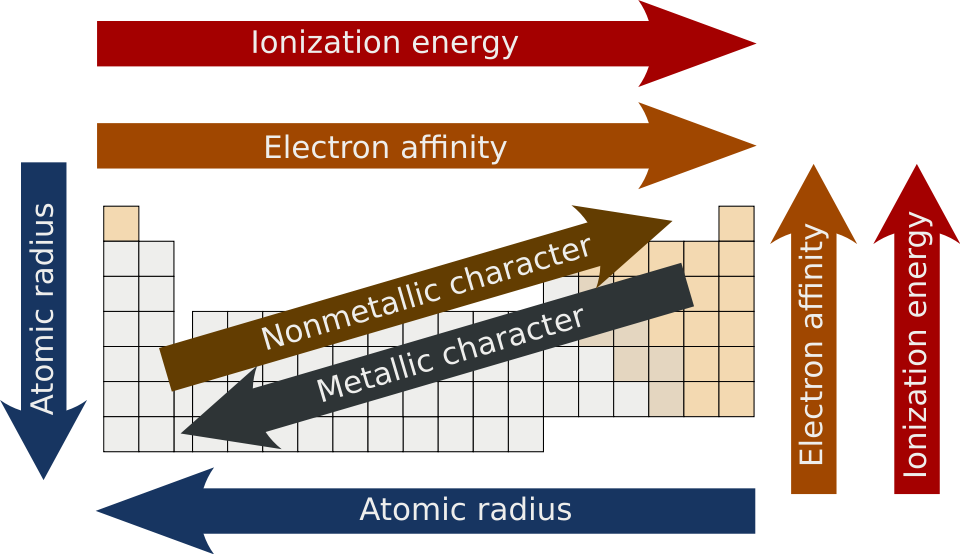
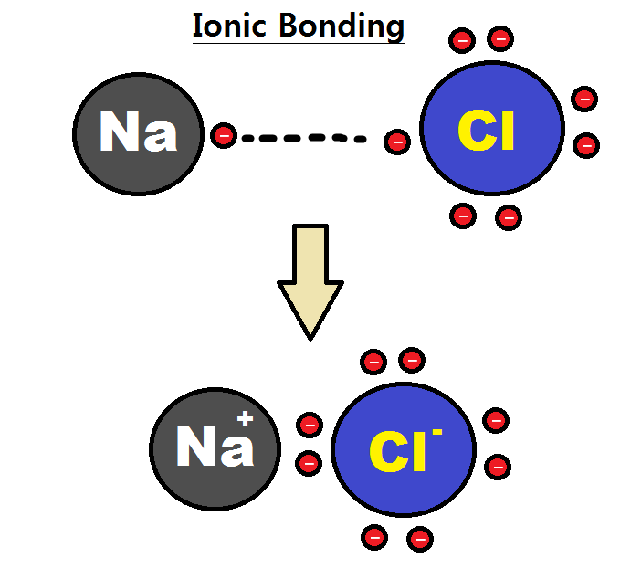
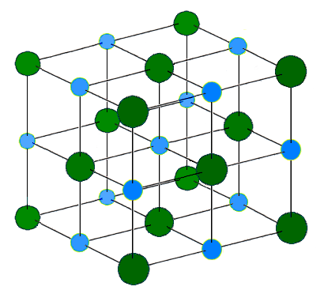

An atom has a tiny central nucleus containing protons (+) and neutrons (no charge), with electrons (−) in shells around it.
원자는 가운데 작은 원자핵에 양성자(+)와 중성자(전하 없음)가 있고, 그 둘레 전자껍질에 전자(−)가 있습니다.
The atomic number = number of protons; the mass number = protons + neutrons.
원자번호 = 양성자 수, 질량수 = 양성자 + 중성자.

Elements are arranged in order of atomic number. Columns are groups; rows are periods.
원소는 원자번호 순으로 배열됩니다. 세로줄은 족, 가로줄은 주기입니다.
Elements in the same group have similar properties.
같은 족 원소는 성질이 비슷합니다.

Group 1 (alkali metals) get more reactive down the group. Group 7 (halogens) get less reactive down the group.
1족(알칼리 금속)은 아래로 갈수록 반응성↑. 7족(할로젠)은 아래로 갈수록 반응성↓.
Group 0 (noble gases) are very unreactive because they have full electron shells.
0족(비활성 기체)은 전자껍질이 꽉 차서 거의 반응하지 않습니다.

Atoms react to get a full outer shell (more stable). They can transfer electrons to form ions and ionic bonds, or share electrons to form covalent bonds.
원자는 가장 바깥 전자껍질을 채워 더 안정해지려고 반응합니다. 전자를 주고받아 이온·이온 결합을 만들거나, 전자를 공유해 공유 결합을 만듭니다.
A compound is two or more elements chemically joined.
화합물은 둘 이상의 원소가 화학적으로 결합한 것입니다.

Simple molecular substances have low melting points and don't conduct electricity.
단순 분자 물질은 녹는점이 낮고 전기를 통하지 않습니다.
Giant structures (giant ionic lattices, giant covalent like diamond) have very high melting points.
거대 구조(거대 이온 결정, 다이아몬드 같은 거대 공유)는 녹는점이 매우 높습니다.
